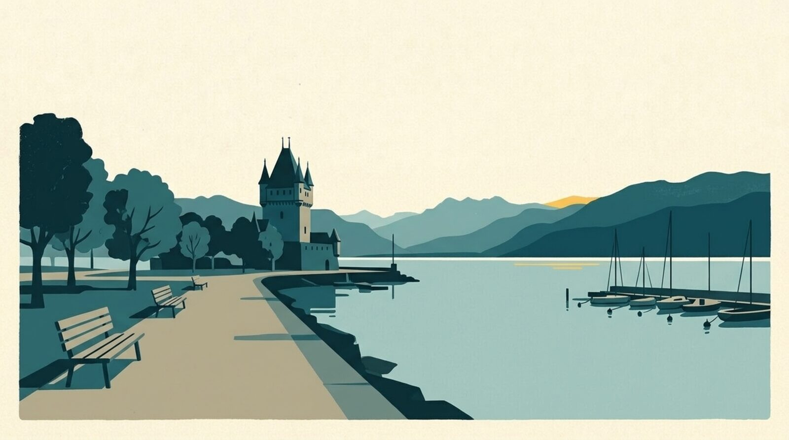

Kurz gesagt
Zwischen Saint-Prex und Pully verfolgt Mein See 10 Badeplätze: Morges, Préverenges, Vidy, Ouchy, Bellerive und mehr. Die Seite nennt die Morgentemperatur des Wassers, Orte am Wasser und Anbieter zum Mieten.
Hier sind die Badeplätze der Region Lausanne und Morges, die die App verfolgt, mit der Morgentemperatur, wenn das Modell einen Wert hat.
Die Badeplätze
Wassertemperatur am Morgen des 24. November 2026, nach dem Modell Alplakes: 8.9 °C bis 9.7 °C, je nach Badeplatz. Sie ändert sich täglich.
- Saint-Prex (8.9 °C)
- Tolochenaz (9.0 °C)
- Morges (9.2 °C)
- Préverenges (9.3 °C)
- Saint-Sulpice (9.5 °C)
- Lausanne – Vidy (9.5 °C)
- Lausanne – Ouchy (9.7 °C)
- Lausanne – Bellerive (9.6 °C)
- Pully (9.7 °C)
- Paudex (9.7 °C)
Wo man am Wasser etwas trinken oder essen kann
- Le Pavois, Morges: Restaurant des Hotels Mont-Blanc au Lac, Terrasse an den Quais von Morges.
- La Jetée de la Compagnie, Lausanne (von Mai bis September): Sommerbar auf dem Steg von Ouchy: Holzdeck, Grilladen und Sonnenuntergang.
- Hôtel-Restaurant de la Plage, Préverenges: Am Ende der Avenue de la Plage, sonnige Terrasse nur wenige Schritte vom grossen Sandstrand.
- La Guinguette de Vidy, Lausanne (von April bis September): Vor dem Bowl de Vidy am Wasser: Treffpunkt von Spaziergängern und Paddlern.
- Le Lacustre, Lausanne: Über dem Anleger von Ouchy: Holzofenpizza und Brunch am Wochenende.
- Bar du Beau-Rivage Palace, Lausanne: Der feine Drink, Terrasse unter den Arkaden mit Blick auf See und Alpen.
- La Générale, Pully (von April bis September): Bar am Hafen von Pully, Steintreppen bis zum See, daneben Beachvolleyball.
- Restaurant du Port de Pully, Pully: Am Hafen, mit Blick auf See und Alpen.
Auf dem Wasser mieten oder sich in der Sauna aufwärmen
Jeder Eintrag führt auf die Website des Anbieters, wenn es eine gibt. Öffnungszeiten und Preise ändern sich: beim Anbieter nachfragen.
- Passion Nautique, Morges, bei Morges: Verleihstation in Morges, vom Tretboot bis zum führerscheinfreien Motorboot.
- Pedalino, Lausanne (von Mai bis September), bei Lausanne – Vidy: Sommerliches Wassersportzentrum am Ostende des grossen Strands von Vidy: Paddleboards, Tretboote, Motorboote.
- École de voile d’Ouchy, Lausanne, bei Lausanne – Ouchy: Schnuppersegeln auf dem Genfersee für Familien und Gruppen, halbtags oder ganztags.
- Pieds dans l’O, Lausanne, bei Lausanne – Ouchy: Im alten Hafen von Ouchy: Tretboote, Elektro- oder Motorboote, Wakeboard und Wasserski.
- Bains des Rives, Lausanne (von Oktober bis März), bei Lausanne – Bellerive: In Bellerive: holzbefeuerte Jurten-Saunen und Terrasse am See, zwischen den Gängen ein Sprung in den Genfersee, von Oktober bis März. Saison 2026–2027: 23 Franken (ermässigt 19.50) für zwei Stunden, Kräutertee inbegriffen; der Dienstag ist Frauen und TINFA-Personen vorbehalten.
- Ski Nautique Club Lausanne, Lausanne, bei Lausanne – Ouchy: Club in Ouchy seit 1966, Steg am Tour Haldimand: Wasserski-, Wakeboard- und Wakesurf-Kurse, auch für Nichtmitglieder.
Vor dem Sprung: die Wasserqualität prüfen. Im Winter: Winterbaden im Genfersee. Wind und Wasser von heute stehen in der App Mein See.
Das Wasser des Sees im Moment
Die Wassertemperatur jedes Badeplatzes steht in der App Mein See, alle drei Stunden aktualisiert.